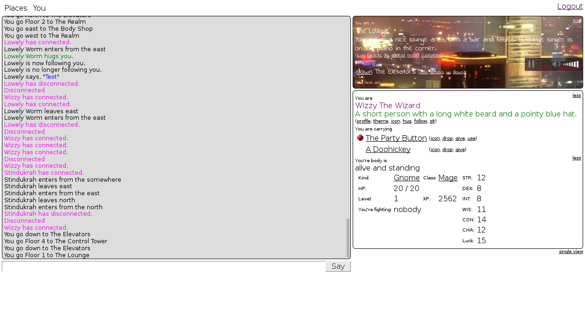
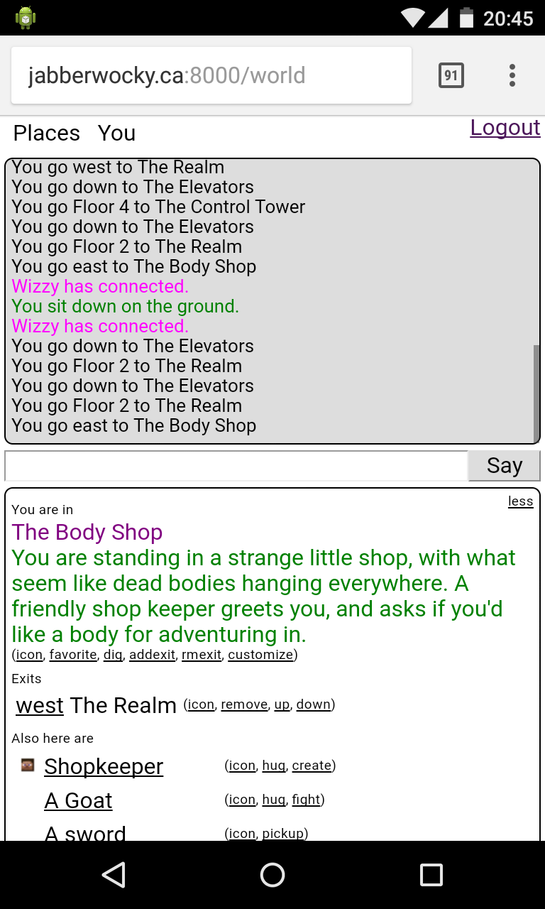

WebMUSH
Started February 16, 2017
A web-based MUSH (Multi-User Shared Hallucination) server, in the spirit of the MUDs, MUSHes, and MOOs of the 80's and 90's. It is written is Node.js with Express for the backend, Mithril + Webpack for the frontend, and websockets for communicating between them. The world can be navagated using hyperlinks, or by typing eg. "/go north". The engine can be used either for social or game-playing purposes.
Configuration
The following environment variables are recognized:
-
PORT The port number the server should run on. Default: 3000
-
DATA_DIR The directory where data is stored (the object db and uploaded media). It should match the layout of the data directory in the repository. Default:
/data
Running
The client code must be compiled with webpack before starting the server
npm install
npm run build
Or nodemon can be used to recompile the client code and restart the server whenever a code change is made using
npm install -g nodemon
npm run nodemon
The server can be started manually without automatic restarting using
npm start
Screenshots
 
Get the Source
https://github.com/transistorfet/webmush/Or clone with:
git clone git@github.com:transistorfet/webmush